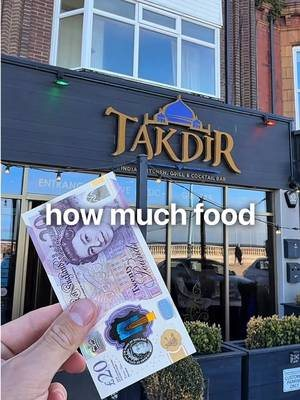
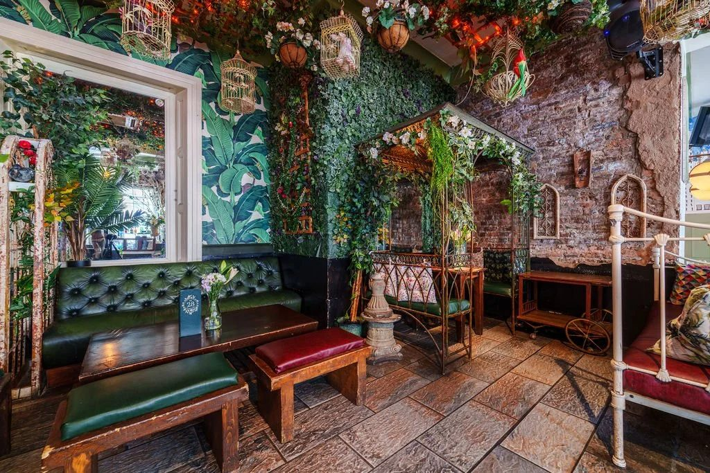
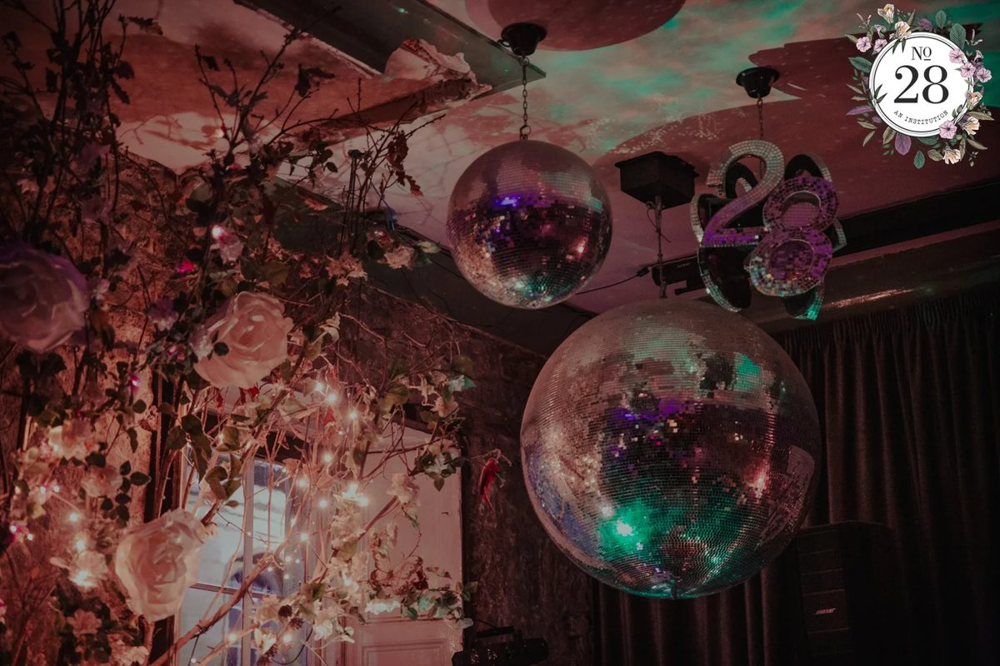
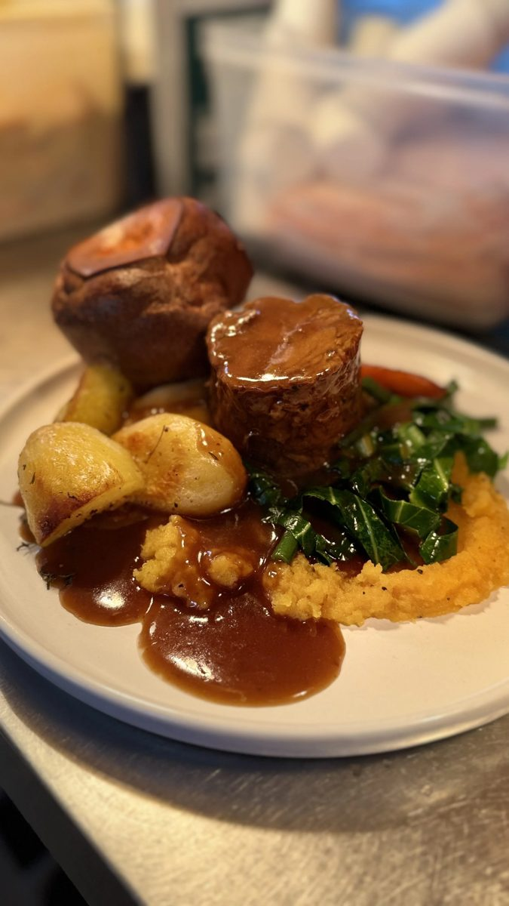
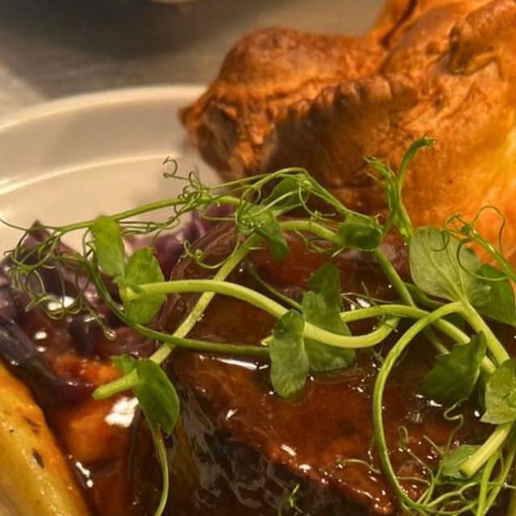
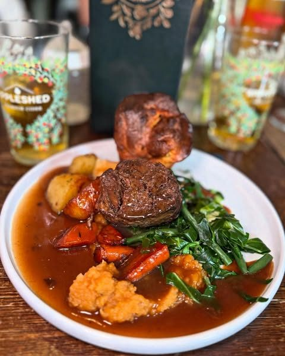
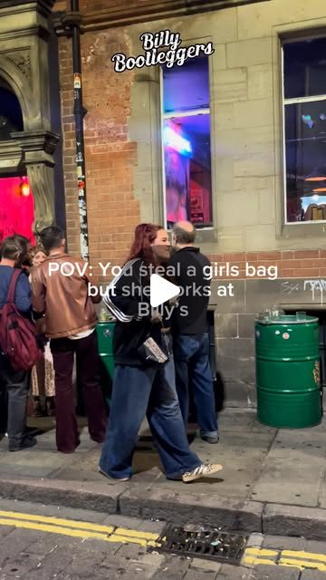
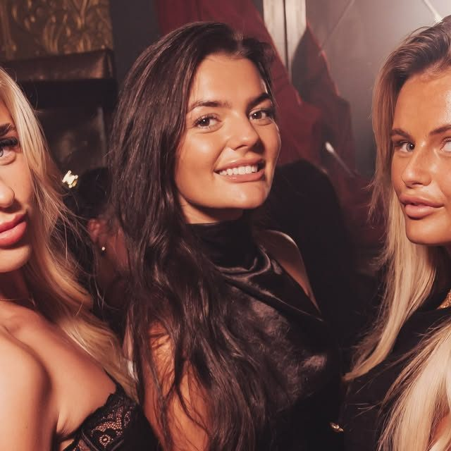

Newcastle's first bottomless brunch. Now let the city see it.
You were the first bar in Newcastle to launch bottomless prosecco brunch, and more than 10,000 people have joined you for it since. You have a hidden staircase, a garden room, mirrorballs and DJs until 3am. We read your website, your Instagram, your Meta ads and three Newcastle venues, and set it next to what has worked for the restaurants we film. This is what we found, the videos we would make, and our rates.
Prepared forPaul
Prepared byJay Williams, Fusion Creative
Checked on3 October 2026
CoversWebsite, social, ads, local venues, ideas, rates
No28 has more to show than almost any bar we look at: bottomless brunch and supper, Sunday dinners with Great Northern Provisions pies, £6 small plates, DJs until 3am, a sister tiki bar downstairs and private hire for up to 75. You already post every week and you already run Meta ads. What is missing is video of the room and the people in it. Most of your posts and ads are food photos and graphics, so the thing that makes No28 different, the night itself, rarely reaches people who have not been up the stairs yet.
9,834
Instagram followers, from 589 posts
1 to 40
likes on your last twelve Instagram posts
~7
Meta ads live now, about 91 run in total
Apr 2025
start date of a bottomless ad that is still running
What is already strong, and worth building on
The first bottomless prosecco brunch in Newcastle, with more than 10,000 guests since. That is a story most bars cannot tell.
A room people remember: the hidden staircase, the garden seating, the mirrorballs and the mezzanine that seats 30.
Sunday dinners and pies that are your best performing posts, at 40 and 38 likes.
The Meta pixel is installed, so people who visit your site can be shown your videos again.
Creator videos already running as ads, which shows you know that real people on camera work.
You do not need a new website or a new menu. You need short video of the room, the brunch and the night, posted on a plan, so the groups planning a birthday or a Saturday out pick No28 first.
02 · What has worked for places like yours
Real people, in the venue, doing something worth watching.
Nine videos we planned and filmed for restaurants we work with, each a different format: a skit, a dish moment, a trend, a challenge, a launch, a new dish, an offer, a hero product and a local call-out. Every one gives people a reason to watch and a reason to visit.
70M
views on one reel for New Greek in Newcastle
3.5M
views on one reel for Takdir in Whitley Bay
+40%
weekly sales for New Greek, in the owner's own words
Skit, 70M viewsNew Greek, Newcastle: "There's always the one impatient customer." A skit at the counter.Dish moment, 3.3M viewsNew Greek, Newcastle: "The ONLY way to eat a Greek salad." One dish, turned into something people argue about.Trend, 535K viewsTakdir, Whitley Bay: A trending format, filmed in the restaurant within days of it taking off.Challenge, 255K viewsNew Greek, Newcastle: "5 bites or less wins £20." A challenge people come in to try.Launch, 92K viewsNew Greek Bakery, Newcastle: "The Taste of Greece has landed in Newcastle." An opening, announced on video.New dish, 90K viewsTakdir, Whitley Bay: "Have you tried our Nachodoms?" A new dish, introduced by a person, not a menu photo.

Offer, 67K viewsTakdir, Whitley Bay: "All for £20? Yes please." An offer shown on camera, not just posted as a graphic.Hero product, 60K viewsNew Greek Bakery, Newcastle: "The best sandwich in Newcastle?" One product, one question.Local call-out, 44K viewsThe Greek Spot, Middlesbrough: "Attention Middlesbrough gyros lovers." A video that speaks to one town.
A reason beats a nice shot. A dish on its own rarely travels. The same dish with a question, a challenge or an offer does.
The venue is the set. Your room, your counter, your kitchen. We film in the place people will visit.
It is planned, not luck. We know which formats work before we arrive, and we pick the mix for your menu and your week.
View counts from our own client dashboard, checked 3 October 2026. Sales figure from the New Greek owner's own review.
03 · Your website
A full website, with a few mixed messages.
The site covers food, brunch, Sunday dinner, clubbing, private hire and booking, and the Meta pixel is installed. These are the changes we would make so it works harder for the video.
What we saw
Why it matters
Fix
Two different brunch offers
The homepage says 12pm to 7pm every day from £35. The brunch page says weekday start times from 5pm and £38.
Make the homepage match the brunch page, so an ad never sends someone to the wrong price.
Old event pages are still live
The New Year's Eve page still says 2025, and the Restaurant Week page is from August.
Update NYE for 2026 now. It is the page people will look for next.
Only Instagram is linked
We could only find a link to Instagram. Your Facebook page has 18.1K followers.
Link Facebook and TikTok in the header and footer.
An old Instagram account
@no28ncl still exists with 44 posts, the last in November 2015. It shares a name with your Facebook page.
Archive it or point its bio to @no28newcastle, so nobody follows the wrong account.



Photos from your own website. The garden room, the mirrorballs and the Sunday plates are exactly what we would film.
04 · Your social channels
You post every week. The posts that work are the ones with people and plates.
9,834
Instagram followers
40
likes on Sunday dinners and pies, your best recent post
36
likes on a weekend look back with faces in it
1 to 8
likes on your four posts from 2 October
No28 posts most weeks on Instagram and runs Meta ads from its Facebook page. The pattern in your recent posts and ads:
Sunday sells. Your two Sunday dinner posts (40 and 38 likes) beat every recap and graphic. People want to see the plate and the room it is eaten in.
Night photos are hard to read. Your weekend recaps are dark, wide shots of the crowd. The one with two friends laughing at the table earned 36 likes, more than the others.
Your ads are mostly stills. Of your eight recent ads we could see, most are food photos and a brunch graphic. One bottomless ad has been running since April 2025. The creator videos from @geordie_scranners and Gan for Bait, like? are the closest to what works.
What this means. Your audience responds to people and plates in the room. Short video of your brunch, your Sundays and your nights, posted on a plan and used in your ads, is how they reach groups who do not follow you yet.
Source: instagram.com/no28newcastle and instagram.com/no28ncl public profiles and posts, and the Meta Ad Library (UK), checked 3 October 2026.
05 · Three Newcastle venues
Who is winning attention in Newcastle, and how.
We looked at three independent Newcastle venues competing for the same nights out and brunch bookings. We also searched the Meta Ad Library for bottomless brunch in Newcastle and found ten other businesses advertising it right now, from Revolution and All Bar One to new openings. Checked on 3 October 2026.
Venue
Instagram
Meta ads
What gets attention
Best recent post
No28 Nelson Street, Grainger Market
9,834
~7 live, ~91 in total
Sunday dinners, pies, weekend recaps
40 likes, Sunday dinners and pies
Livello Dean Street, city centre
20K
~1 live, ~35 in total
Club nights, faces on a night out
136 likes, three friends on a night out
Billy Bootleggers Stepney Bank, Ouseburn
7,710
~22 live, ~390 in total
Live music, themed bottomless specials
124 likes, a staff skit outside the bar
Dakwala Bombay Canteen Grainger Street
12K
None live, ~49 in total
Bottomless brunch explained in one video
179 likes, how their bottomless works
What the numbers say
Billy Bootleggers has fewer followers than you and runs far more ads. About 22 live and 390 in total, and its best recent post is a skit: "POV: you steal a girl's bag but she works at Billy's."
Livello sells the night with faces. Its best recent post is three friends on a night out, 136 likes. Your recap with two friends laughing was your best night post too.
Dakwala explains its brunch in one video. "How does it work?" earned 179 likes, its best. You were first to bottomless in Newcastle, and nobody has told that story on video.
Sources: public Instagram profiles and the Meta Ad Library (UK), 3 October 2026.
06 · What is working in your market
What is already working, in your account and nearby.
Two from No28 and two from Newcastle venues. The common thread is real people, in the room, doing something.

Your best postNo28: "Sunday Dinners and deliriously good pies every Sunday." 40 likes, your best recent post.

Your creator ad@geordie_scranners with No28: "Craving a killer Sunday roast?" A local voice, running as your ad since 19 July.

A staff skitBilly Bootleggers: "POV: you steal a girl's bag but she works at Billy's." 124 likes, filmed on the street outside.

Faces, not a roomLivello: three friends on a night out, 136 likes, its best recent post.
1
The night, not the venue
The staircase, the switch to clubbing at 10pm, the friends at the table. People share moments they want to be in.
2
A reason to book this week
Brunch from £38, Sunday dinner until 6pm, the next DJ. Every video ends with one.
3
People on screen
Your team and your regulars, with permission. Skits and challenges, filmed in the room.
07 · Twelve videos we would make
Built from your room, your brunch and your regulars.
Every concept uses something you already have. Six are built to bring people in this week. Six are built to keep your Instagram growing.
Videos that bring people in
6 concepts
Skit
Four minutes left
"When there are four minutes left on your 90 minute brunch."
A table of friends realises the clock is nearly up. Text overlay does the talking.
Why: every brunch group has lived it, and it sells the 90 and 120 minute options.
Skit
The hidden staircase
"POV: your mate says the best bar in town is inside the Grainger Market."
One friend doubts it all the way up the stairs, then sees the room.
Why: turns being hard to find into the reason to come.
Challenge
Guess the pie
"Name the pie filling with your eyes closed."
Regulars or staff, a Sunday, a Great Northern Provisions pie each.
Why: challenges are among the formats that travel furthest for our restaurants.
Transition
9:59pm to 10pm
"No28 at 9:59pm. No28 at 10pm."
The same shot, before and after clubbing mode: the sound, the mirrorballs, the lights.
Why: shows in seven seconds that this is a bar and a night out.
Challenge
Name that tune
"Name the song in three seconds, win the next round."
Your DJ plays the first second of a track to people at the bar.
Why: puts your music and your crowd on camera at once.
Groups
Your birthday, here
"Planning a birthday for 30? This is the mezzanine."
A booked party, with permission, from the stairs to the balcony.
Why: brings in private hire enquiries for groups up to 75.
Organic that builds the audience
6 concepts
Series
First to bottomless
"We started bottomless brunch in Newcastle."
The story in 30 seconds, told by the team.
Why: a claim nobody else can make.
Series
Rating every pie
"Rating every pie on our menu."
Two of your team, honest scores, one pie a week.
Why: a weekly series people look for on a Sunday.
Team
Behind the bar
"What our bartender orders on a night off."
One person at a time, 20 seconds each.
Why: people visit people.
Downstairs
Friki Tiki
"There is a tiki bar under this bar."
The way in, or the way out, through your sister venue.
Why: links your two venues for every follower.
DJs
This weekend
"Who is on the decks this Friday."
A short clip of each DJ before the weekend.
Why: gives people a reason to choose tonight.
Locals
On the stairs
"Asking people on the way up what to order."
Quick answers from customers, with permission.
Why: real recommendations from Newcastle.
08 · The plan, month by month
A plan that starts with the busy days you already have.
Week 1
Plan and set up
A call to pick the first twelve videos, fix the homepage brunch times and prices, update the NYE page and link Facebook from the site.
Week 2
First filming day
A Saturday brunch into the switch to clubbing at 10pm, and a Sunday dinner service, filmed in one weekend.
Weeks 2 to 4
Posting on a plan
Videos go out on set days, each ending with a reason to book this week.
Month 2
More of what works
We look at what brought people in and film more of it, plus the run up to Christmas and New Year's Eve.
Month 3
Review together
We report what the videos reached, what they brought in and what to do next.
Every month you get: filming in your venue, edited short videos, posting on a plan, and a simple monthly report. You keep every video, ready to use in your ads.
09 · Our rates
Two ways to work with us.
Both include filming in your venue, editing, posting and managing your Instagram and TikTok. Three month minimum, then rolling.
Core
£899
a month, 10 to 12 videos
One filming day a month in your venue
10 to 12 edited short videos
Posting and captions on Instagram and TikTok
A monthly report
Growth
£1,250
a month, 20 to 25 videos
Two filming days a month
20 to 25 edited short videos
Posting, captions and community replies
A monthly report and planning call
Want ads as well? You already run Meta ads. Once the videos are working, we can run them for you with fresh video in rotation. That is a separate service, and we would only suggest it when the content is ready.
10 · Who we are, and next steps
A Newcastle team that films, edits and posts for restaurants.
We come to you, film in your venue, edit in house and post on a plan. We measure what matters to a restaurant: covers, bookings and repeat customers, not likes.
+40%
weekly sales for a Newcastle restaurant, in the owner's own words
87M+
views on content we have made for that one restaurant
70M
views on a single reel, planned and filmed in the venue
Jay Williams and Anya Davey, the founders of Fusion Creative. We film and run ads for businesses across the North East from Newcastle, a few minutes from Nelson Street. We would be the people in your venue with the camera, and the people you call about the plan. Our team of editors turns every filming day into finished videos, and either of us can be on camera when a video needs a presenter.
Next steps
A 20 minute call or a drink at No28 to pick the first videos.
Then the first filming day on a Saturday brunch and night, or a Sunday dinner.


You post every week. The posts that work are the ones with people and plates.
No28 posts most weeks on Instagram and runs Meta ads from its Facebook page. The pattern in your recent posts and ads:
What this means. Your audience responds to people and plates in the room. Short video of your brunch, your Sundays and your nights, posted on a plan and used in your ads, is how they reach groups who do not follow you yet.
Source: instagram.com/no28newcastle and instagram.com/no28ncl public profiles and posts, and the Meta Ad Library (UK), checked 3 October 2026.